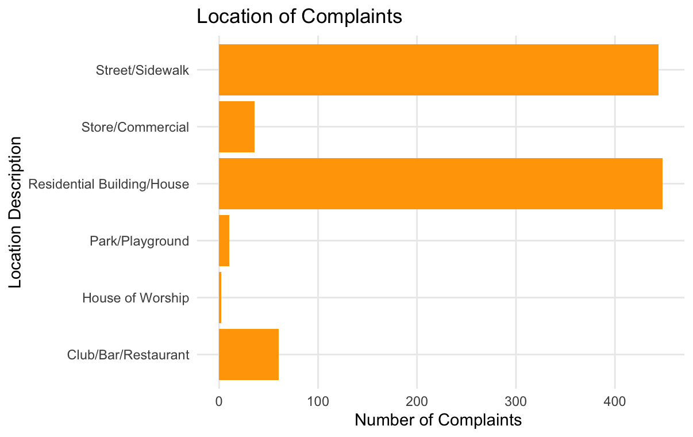
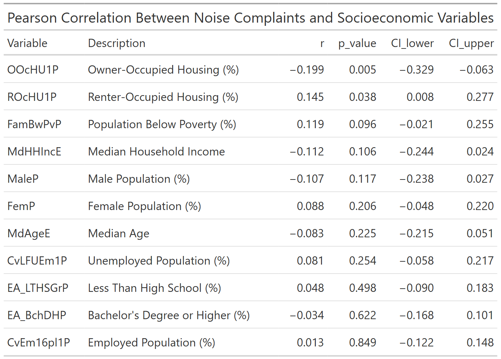

Exploring the Factors of New York City Noise Complaints
Noise Busters: Erin Murphy, Maria Desouza, Jeanne Lin, & Augustine Korang
Introduction
When you live in New York City, you are surrounded by noise. Cars going by, the subway rattling underground, different types of construction, and people going about their daily lives make up just a few of the sources for the constant level of noise in the city. But what happens when the noise levels become too much? How are these problems solved? To report a noise complaint, New York City residents can report the disturbance to 311, which is a non-emergency line and online portal for New York City residents to access City government services and information. This includes dealing with noise complaints.
In 2024, New York residents filed over 700,000 noise complaints through 311, making it the most reported issue. Residential noise, which accounted for more that 356,000 complaints, was the most reported type of noise 1. Noise in general is a top concern when it comes to the impact of the quality of life, public health, and neighborhood satisfaction. This report will aim to explore noise complaints in New York City.
Specifically, our overarching question is:
How do various factors relate to the frequency and distribution of 311 noise complaints in New York City
In order to achieve this, this report will dive deeper into the following specific factors and questions:
- Geographic Distribution: Which neighborhoods or boroughs have the highest density of noise complaints?
- Public Safety: Do areas with more shooting incidents have more/fewer noise complaints?
- Temporal Patterns: How do noise complaints vary by time of day, day of week, or season?
- Socioeconomic Factors: How to socioeconomic factors relate to noise complaint frequency?
The Data
For this report, a variety of datasets were used for the analysis.
For noise complaints, we used the 311 Noise Complaints dataset from NYC OpenData. This dataset compiles all 311 service requests from 2010 to the present. However, for this report, the focus will be from 2022-2025. This dataset included information such as, created date, closed date, complaint type, descriptor, location type, and incident address.
In order to explore the socioeconomic factors, we used the ACS, American Community Surveys from the United States Census Bureau. This dataset incudes various information about city demographics, such as media household incomes, renter vs owner owned housing, education, and employment rates.
As for exploring any relationship between noise and public safety, we used two datasets from NYC OpenData. The first is NYPD Shooting Incident Data (Year to Date), which every shooting incident that occurs in NYC during the current calendar year. The second is NYPD Shooting Incident Data (Historic), which list every shooting incident that occurred in NYC going back to 2006 through the end of the previous calendar year. As mentioned previously, we chose to focus on 2022-2025, so only a portion of this data set was used. Both datasets include information such as occurance date, ccurrence time, location of the ccurrence, location description, and which borough it was in.
Previous Studies
Before diving in to our analysis, it was important to review previous work done on this topic to see what has been said already and what gaps there are in existing literature. Findings from previous studies suggest there is a significant impact of socioeconomic factors including demographic, job-related, property and deprivation aspects on noise complaints. While there is evidence of a general association between noise pollution and violent crime (some of which are outlined in this report, it remains unclear whether neighborhoods with more shooting incidents or high police presence exhibit higher or lower rates of 311 noise complaints. This report will attempt to explore this link. Also, there has been a limited scope of existing NYC studies using 311 data. Most studies that use 311 data have predominately focused on one or a few socioeconomic indicators. This report attempts to integrate a comprehensive set of socioeconomic indicators, including housing characteristics that are often overlooked in NYC noise complain analysis.
Geographic Distribution
Which neighborhoods or boroughs have the highest density of noise complaints?
Key Findings by Measure
Per Square Mile
Top Neighborhoods:
1. East Village
2. Lower East Side
3. Midtown/Hell’s Kitchen
Why They Stand Out: Small, tightly packed areas with lots of late-night activity (bars, clubs, restaurants), generating a huge number of calls in a tiny footprint.
Per 1,000 Residents.
Top Neighborhoods:
1. Time Square/Herald Square
2. Financial District (Tribeca)
3. East Village
Why They Stand Out: Here, a relatively small resident population still makes thousands of complaints meaning each person is calling far more often than in a typical neighborhood.
Borough‑Level Takeaway
- Manhattan dominates every ranking. Its nightlife hubs and commercial corridors consistently top both density charts.
- Brooklyn’s trendiest corners (Williamsburg & Bushwick) form a clear second tier; busy enough to show up once we adjust for land size, but not quite at Manhattan’s levels.
- Outer boroughs (Queens, the Bronx, Staten Island) drop to the bottom once we account for how big and how populous they are, lots of land or people, but relatively fewer complaints per unit.
What is shown: The classic “heat” map of absolute volume.
Top NTAs (brightest yellow/orange):
- Manhattan Core (Lower East Side, East Village, Midtown)
- Brooklyn pockets around Williamsburg and Bushwick
- To a lesser extent, parts of Queens (Long Island City/Astoria)
Key takeaway: This confirms where people are calling 311 most often but raw counts conflate large, dense districts (lots of residents and businesses) with true “noisiness.”
What is shown: Compact neighborhoods light up even brighter once we account for land area.
Highest densities (>1,500 complaints/sq mi):
- East Village & Lower East Side (Manhattan CD3 & CD1)
- Midtown & Hell’s Kitchen corridor (CD5)
Strong runners‑up (800–1,200 complaints/sq mi):
- Williamsburg & Bushwick (Brooklyn CD1 & CD4)
Moderate (300–600 complaints/sq mi):
- Selected NTAs in Queens (e.g., Long Island City, Astoria) and the Bronx
Lowest densities (<100 complaints/sq mi):
- Almost all of Staten Island and outer Queens
Key takeaway: When we control for size, Manhattan’s nightlife and mixed‑use neighborhoods dominate, with a handful of Brooklyn NTAs showing elevated but secondary densities.
What is shown: Complaint counts relative to the number of people living there revealing where residents (vs. visitors or businesses) are most likely to call 311.
Top per‑capita NTAs (4,000–6,000+ complaints per 1,000 residents):
- Commercial/Entertainment Districts in Manhattan—especially the Financial District/Tribeca and Times Square/Herald Square areas, where a smaller resident base files a disproportionately high volume.
- East Village also remains prominent, reflecting an active, complaint‑prone residential population.
Secondary per‑capita hotspots (2,000–4,000 per1,000):
- Lower East Side, Hell’s Kitchen, and select Brooklyn NTAs like Bushwick.
Lowest per‑capita (<500 per 1,000):
- Large, stable residential NTAs in outer boroughs (Staten Island, much of Queens and the Bronx).
Key takeaway: Once we adjust for the number of residents, the most complaint‑intensive neighborhoods are actually those with a mix of commercial activity and a smallish resident population such as Times Square, Tribeca, and the East Village where each resident, on average, files more 311 noise reports than someone living in more suburban NTAs.
For more in-depth analysis, please see individual report HERE.
Noise Complaints & Shooting Incidents
Do areas with more shooting incidents have more/fewer noise complaints?
When analyzing the connections between the NYPD Shooting data and the 311 noise complaints there a few trends that start to appear. The first trend is in the descriptions of the physical locations of the events.
As shown in the chart below, most shooting incidences take place at Multi-Dwell Public Houses, which are mostly considered to be low-income housing, followed by Mult Dwell Apartment Buildings and Bar/Nigh Clubs. 
As for the noise complaints, the below chart demonstrates that Residential Building/House is the most common location type, followed closely by Street/Sidewalk.  A key takeaway is that there are similarities between the types of locations where these events tend to occur. This can be useful when looking at NYPD patrol routes, as they are the primary agency that responds to both of these types of incidents. They can use this information to be more efficient on where they are sending their officers out to patrol.
For more in-depth analysis, please see individual report HERE.
Temporal Patterns
How do noise compants vary by time of day, day of week, or season?
Summer Brings Peak Noise Concerns
When analyzing temporal patterns, we found a dramatic variation in noise complaints throughout the year, with summer months (June-August) showing the highest volumes and winter months (December-February) showing the lowest. August represents the peak month with more than twice as many complaints as January.
This seasonal pattern likely reflects several interacting factors:
- Increased outdoor activity during warmer months
- Open windows in summer allowing more noise transmission
- Extended daylight hours lengthening the period of active noise generation
- More social gatherings and public events during summer months
The seasonal pattern connects directly to our socioeconomic findings. As Vargas and Klein (2022) noted, “Seasonal variations in noise complaints are moderated by neighborhood characteristics, with higher-income areas maintaining more consistent reporting patterns across seasons.” This suggests that while actual noise may follow similar seasonal patterns across the city, reporting behavior varies based on socioeconomic factors.
For more in-depth analysis, please see individual report HERE
Socioeconomic Factors
How to socioeconomic factors relate to noise complaint frequency?
Using 2022 noise complaint data and American Community Survey estimates, the analysis combined spatial mapping, bivariate choropleth visualization and Pearson correlation to examine patterns across New York City.
The results reveal that housing tenure, specifically rates of owner-occupied and renter-occupied housing shows some level of linear association with noise complaints. Other variables such as income, education, gender, age, poverty and employment showed no statistically significant relationships. These findings suggest that neighborhood housing composition plays a key role in noise reporting behavior or exposure while other socioeconomic dimensions may have more limited influence.  The map shows that neighborhoods with high renter-occupied housing rates tend to report more noise complaints, especially in central areas of Manhattan, the Bronx, and Brooklyn (purple). In contrast, low-renter areas with high noise (orange) are scattered, while areas with both low renter rates and low noise (gray) are mostly in less dense regions like Staten Island and parts of Queens. This suggests a link between rental housing concentration and noise complaint volume.
The map shows that neighborhoods with high renter-occupied housing rates tend to report more noise complaints, especially in central areas of Manhattan, the Bronx, and Brooklyn (purple). In contrast, low-renter areas with high noise (orange) are scattered, while areas with both low renter rates and low noise (gray) are mostly in less dense regions like Staten Island and parts of Queens. This suggests a link between rental housing concentration and noise complaint volume.
 Neighborhoods with high noise complaints and low owner-occupied housing (orange areas) are mainly in the Bronx and parts of Brooklyn, while high ownership and low noise (blue) dominate Staten Island and Queens.
Neighborhoods with high noise complaints and low owner-occupied housing (orange areas) are mainly in the Bronx and parts of Brooklyn, while high ownership and low noise (blue) dominate Staten Island and Queens.
 Neighborhoods with more owner-occupied housing reported fewer noise complaints. Statistically significant negative correlation (r = -0.199, p = 0.005). Neighborhoods with more renter-occupied housing reported slightly more noise complaints. Statistically significant positive correlation (r = 0.145, p = 0.038). All other neighborhood-level socioeconomic variables showed no significant correlation with noise complaints.
For more in-depth analysis, please see individual report HERE
Summary of Conclusions
After analyzing the 311 data, there are some clear conclusions and trends. Overall, Manhattan’s nightlife and commercial neighborhoods have the highest noise‑complaint densities, followed by Brooklyn’s Williamsburg and Bushwick. Queens, the Bronx, and Staten Island show much lower rates once normalized for area and population. As for noise complaints and shooting incidents, they share certain trends, such as similar types of locations and times of day, which could help the city be efficient in their police patrolling and responses. Higher-income neighborhoods report steadily across days and seasons, while lower-income areas concentrate their complaints during evening leisure hours, weekends, and summer months. And finally, housing characteristics showed a clear link to noise complaints while other socioeconomic factors (gender, education, income, employment, age, poverty) had no significant association.